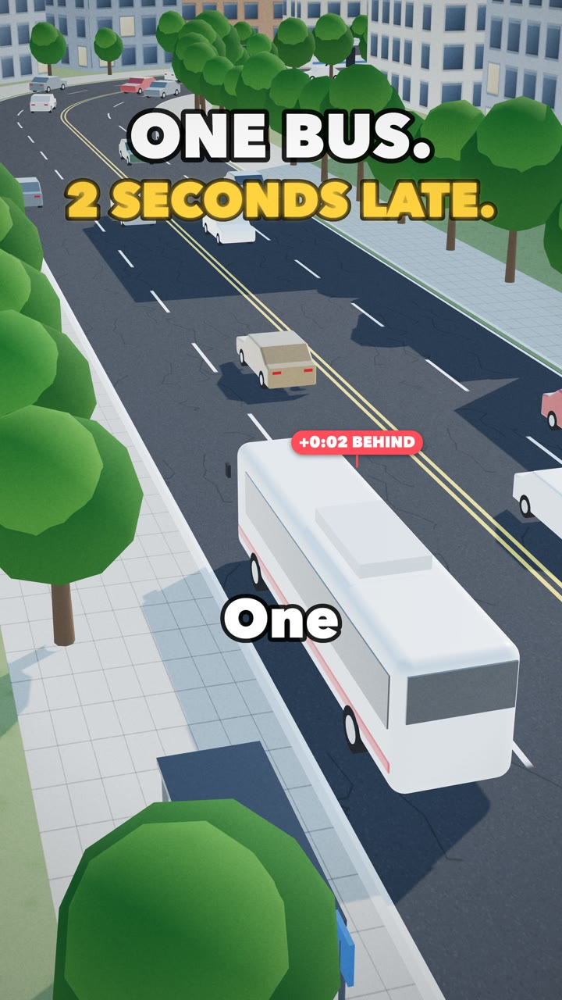
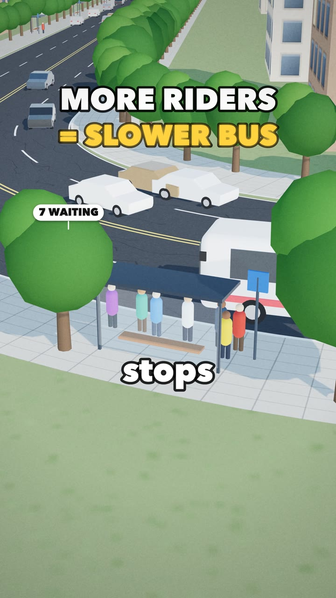
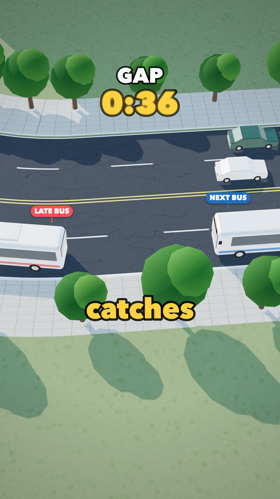

버스는 왜 꼭 두 대씩 같이 올까? — 2초 늦은 버스 한 대의 6시간
아무도 잘못하지 않았는데 버스가 뭉치는 이유
정류장에서 이십 분을 기다렸다. 배차 간격은 분명 5분이라고 쓰여 있었다. 그러다 버스가 왔다. 두 대가 나란히. 뒤차는 텅 비어 있었다.
출퇴근을 해 본 사람이라면 한 번쯤 겪어 봤을 장면이다. 기사님이 게으른 걸까, 회사가 배차를 엉터리로 하는 걸까.
아무도 잘못하지 않아도, 버스는 뭉친다.
· · ·
2초의 시작
컴퓨터 속에 순환 노선을 하나 만들었다. 정류장 24곳, 버스 6대. 버스는 약 4분 40초 간격으로 고르게 출발한다. 승객은 정류장마다 꾸준히 와서 줄을 서고, 버스는 줄이 빌 때까지 사람을 태운다.
그런데 출발할 때 버스 한 대가 앞차보다 아주 조금 늦었다. 2초쯤.

2초는 아무것도 아니다. 그런데 그 버스가 다음 정류장에 도착하면, 앞차가 떠난 지 2초 더 지난 셈이다. 그사이 사람이 조금 더 와 있다. 사람이 많으니 태우는 데 시간이 조금 더 걸린다. 그래서 다음 정류장에는 조금 더 늦게 도착한다. 거기에는 사람이 조금 더 많다.

늦을수록 더 늦어지는 고리. 이걸 되먹임이라고 부른다.
· · ·
뒤차는 반대로 빨라진다
뒤따라오는 버스는 정반대다. 앞차가 사람을 많이 태워 갔으니, 정류장에 남은 사람이 적다. 금방 태우고 금방 떠난다. 그러니 점점 빨라진다.
앞차는 점점 느려지고, 뒤차는 점점 빨라진다. 둘 사이의 간격은 줄어들 수밖에 없다.

시뮬레이션에서 이 두 버스는 출발 후 약 두 시간 만에 딱 붙어 버렸다. 그리고 같은 일이 다른 버스들 사이에서도 일어났다.
6시간 뒤
여섯 시간이 지나자, 고르게 흩어져 있던 버스 6대가 노선 위에서 한 덩어리가 되어 함께 달리고 있었다. 정류장에서는 버스 6대가 줄줄이 지나간 뒤 한참 동안 아무것도 오지 않는다.

정류장에서 기다리는 시간은 평균 2.3분에서 9.1분으로 늘었다. 버스 수도, 승객 수도, 도로도 그대로인데.
버스 간격을 바꾸거나 "버스를 일부러 기다리게" 하면 어떻게 될까. 직접 돌려 보자.
→ 버스 몰림 실험, 직접 돌려 보기
· · ·
거꾸로 같은 해법
그럼 어떻게 해야 할까. 버스를 6대에서 8대로 늘리면? 평균 기다림은 5.3분으로 줄지만, 8대가 고르게 다닐 때(1.7분)의 세 배다. 버스는 여전히 뭉친다. 더 빨리 달리게 하면? 7.6분. 역시 뭉친다.
효과가 있었던 건 거꾸로 들리는 방법이었다. 버스를 정류장에서 기다리게 하는 것. 앞차와의 간격이 충분히 벌어질 때까지 뒤차가 잠깐 서 있으면, 뭉침이 풀리고 평균 기다림이 다시 2분대로 돌아온다. 1964년 두 연구자(Newell과 Potts)가 이 되먹임을 처음 정리했고, 지금도 많은 도시가 "간격 맞추기 정차"를 쓴다.
가끔 버스가 정류장에서 출발하지 않고 잠깐 서 있을 때가 있다. 답답하지만, 어쩌면 그 버스는 다음 정류장의 누군가를 위해 기다리는 중인지도 모른다.
빨리 가는 것보다, 고르게 가는 것이 모두를 빨리 가게 한다.
덧붙임. 글 속의 숫자는 사이트 시뮬레이션 모델 결과다(정류장 24곳, 버스 6대, 승객 시간당 40명, 시드 1. 평균 기다림은 8번 반복 평균). 실제 노선의 기록이 아니다. 근거: G. F. Newell & R. B. Potts (1964), "Maintaining a bus schedule". 그림은 직접 만든 3D 시뮬레이션 화면이며, 글 정리에 AI(Claude)의 도움을 받았다.
— 시뮬라티오 랩, Lab장
네이버 블로그로 옮기기
① 제목 → 제목 칸 ⌘V · ② 본문 → 본문 ⌘V (사진도 함께 붙어요. 안 붙으면 사진만 따로 올리기) · ③ 태그 → 발행 창 태그 칸 · ④ 카테고리 "왜 그럴까" · ⑤ 발행 뒤 네이버 주소를 content/03-bus-bunching.md 의 naver_url에 적기
정류장에서 이십 분을 기다렸다. 배차 간격은 분명 5분이라고 쓰여 있었다. 그러다 버스가 왔다. 두 대가 나란히. 뒤차는 텅 비어 있었다.
출퇴근을 해 본 사람이라면 한 번쯤 겪어 봤을 장면이다. 기사님이 게으른 걸까, 회사가 배차를 엉터리로 하는 걸까.
아무도 잘못하지 않아도, 버스는 뭉친다.
· · ·
2초의 시작
컴퓨터 속에 순환 노선을 하나 만들었다. 정류장 24곳, 버스 6대. 버스는 약 4분 40초 간격으로 고르게 출발한다. 승객은 정류장마다 꾸준히 와서 줄을 서고, 버스는 줄이 빌 때까지 사람을 태운다.
그런데 출발할 때 버스 한 대가 앞차보다 아주 조금 늦었다. 2초쯤.

처음엔 2초 늦었을 뿐인 버스
2초는 아무것도 아니다. 그런데 그 버스가 다음 정류장에 도착하면, 앞차가 떠난 지 2초 더 지난 셈이다. 그사이 사람이 조금 더 와 있다. 사람이 많으니 태우는 데 시간이 조금 더 걸린다. 그래서 다음 정류장에는 조금 더 늦게 도착한다. 거기에는 사람이 조금 더 많다.

늦은 버스의 정류장에는 사람이 더 쌓인다
늦을수록 더 늦어지는 고리. 이걸 되먹임이라고 부른다.
· · ·
뒤차는 반대로 빨라진다
뒤따라오는 버스는 정반대다. 앞차가 사람을 많이 태워 갔으니, 정류장에 남은 사람이 적다. 금방 태우고 금방 떠난다. 그러니 점점 빨라진다.
앞차는 점점 느려지고, 뒤차는 점점 빨라진다. 둘 사이의 간격은 줄어들 수밖에 없다.

두 버스 사이의 간격이 1분 54초에서 6초로 줄어든다
시뮬레이션에서 이 두 버스는 출발 후 약 두 시간 만에 딱 붙어 버렸다. 그리고 같은 일이 다른 버스들 사이에서도 일어났다.
6시간 뒤
여섯 시간이 지나자, 고르게 흩어져 있던 버스 6대가 노선 위에서 한 덩어리가 되어 함께 달리고 있었다. 정류장에서는 버스 6대가 줄줄이 지나간 뒤 한참 동안 아무것도 오지 않는다.

6시간 뒤, 버스 6대가 한 덩어리로
정류장에서 기다리는 시간은 평균 2.3분에서 9.1분으로 늘었다. 버스 수도, 승객 수도, 도로도 그대로인데.
버스 간격을 바꾸거나 "버스를 일부러 기다리게" 하면 어떻게 될까. 직접 돌려 보자.
→ 버스 몰림 실험, 직접 돌려 보기
· · ·
거꾸로 같은 해법
그럼 어떻게 해야 할까. 버스를 6대에서 8대로 늘리면? 평균 기다림은 5.3분으로 줄지만, 8대가 고르게 다닐 때(1.7분)의 세 배다. 버스는 여전히 뭉친다. 더 빨리 달리게 하면? 7.6분. 역시 뭉친다.
효과가 있었던 건 거꾸로 들리는 방법이었다. 버스를 정류장에서 기다리게 하는 것. 앞차와의 간격이 충분히 벌어질 때까지 뒤차가 잠깐 서 있으면, 뭉침이 풀리고 평균 기다림이 다시 2분대로 돌아온다. 1964년 두 연구자(Newell과 Potts)가 이 되먹임을 처음 정리했고, 지금도 많은 도시가 "간격 맞추기 정차"를 쓴다.
가끔 버스가 정류장에서 출발하지 않고 잠깐 서 있을 때가 있다. 답답하지만, 어쩌면 그 버스는 다음 정류장의 누군가를 위해 기다리는 중인지도 모른다.
"빨리 가는 것보다, 고르게 가는 것이 모두를 빨리 가게 한다."
덧붙임. 글 속의 숫자는 사이트 시뮬레이션 모델 결과다(정류장 24곳, 버스 6대, 승객 시간당 40명, 시드 1. 평균 기다림은 8번 반복 평균). 실제 노선의 기록이 아니다. 근거: G. F. Newell & R. B. Potts (1964), "Maintaining a bus schedule". 그림은 직접 만든 3D 시뮬레이션 화면이며, 글 정리에 AI(Claude)의 도움을 받았다.
👉 직접 돌려 보기: simulatiolab.com/bunching
— 시뮬라티오 랩, Lab장